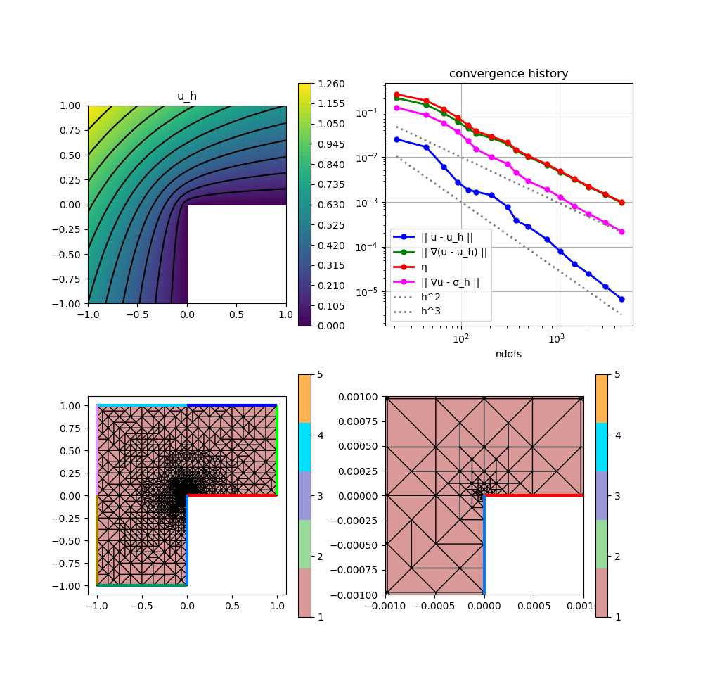

A06 : Local Equilibrated Fluxes 2D
This example computes a local equilibration error estimator for the $H^1$ error of some $H^1$-conforming approximation $u_h$ to the solution $u$ of some Poisson problem $-\Delta u = f$ on an L-shaped domain, i.e.
\[\eta^2(\sigma_h) := \| \sigma_h - \nabla u_h \|^2_{L^2(T)}\]
where $\sigma_h$ discretisates the exact $\sigma$ in the dual mixed problem
\[\sigma - \nabla u = 0 \quad \text{and} \quad \mathrm{div}(\sigma) + f = 0\]
by some local equilibration strategy, see reference below for details.
This examples demonstrates the use of low-level structures to assemble individual problems and a strategy to solve several small problems in parallel by use of non-overlapping node patch groups.
''A posteriori error estimates for efficiency and error control in numerical simulations'' Lecture Notes by M. Vohralik >Link<
module ExampleA06_LocalEquilibratedFluxes2D
using GradientRobustMultiPhysics
using ExtendableGrids
using ExtendableSparse
using GridVisualize
# exact solution u for the Poisson problem
function exact_function!(result,x)
result[1] = atan(x[2],x[1])
if result[1] < 0
result[1] += 2*pi
end
result[1] = sin(2*result[1]/3)
result[1] *= (x[1]^2 + x[2]^2)^(1/3)
end
# ... and its gradient
function exact_function_gradient!(result,x)
result[1] = atan(x[2],x[1])
if result[1] < 0
result[1] += 2*pi
end
# du/dy = du/dr * sin(phi) + (1/r) * du/dphi * cos(phi)
result[2] = sin(2*result[1]/3) * sin(result[1]) + cos(2*result[1]/3) * cos(result[1])
result[2] *= (x[1]^2 + x[2]^2)^(-1/6) * 2/3
# du/dx = du/dr * cos(phi) - (1/r) * du/dphi * sin(phi)
result[1] = sin(2*result[1]/3) * cos(result[1]) - cos(2*result[1]/3) * sin(result[1])
result[1] *= (x[1]^2 + x[2]^2)^(-1/6) * 2/3
end
# everything is wrapped in a main function
function main(; verbosity = 0, order = 2, nlevels = 15, theta = 1//2, Plotter = nothing)
# set log level
set_verbosity(verbosity)
# initial grid
xgrid = grid_lshape(Triangle2D)
# choose some finite elements for primal and dual problem (= for equilibrated fluxes)
# (local equilibration for Pk needs at least BDMk)
if order == 1
FEType = H1P1{1}
FETypeDual = HDIVBDM1{2}
elseif order == 2
FEType = H1P2{1,2}
FETypeDual = HDIVBDM2{2}
else
@error "order must be 1 or 2"
end
# negotiate data functions to the package
u = DataFunction(exact_function!, [1,2]; name = "u", dependencies = "X", quadorder = 5)
∇u = DataFunction(exact_function_gradient!, [2,2]; name = "∇u", dependencies = "X", quadorder = 4)
# setup Poisson problem
Problem = PoissonProblem()
add_boundarydata!(Problem, 1, [2,3,4,5,6,7], BestapproxDirichletBoundary; data = u)
add_boundarydata!(Problem, 1, [1,8], HomogeneousDirichletBoundary)
# define error estimator : || sigma_h - nabla u_h ||^2_{L^2(T)}
# this can be realised via a kernel function
function eqestimator_kernel(result, input)
# input = [Identity(sigma_h), Divergence(sigma_h), Gradient(u_h)]
result[1] = (input[1] - input[4])^2 + (input[2] - input[5])^2 + input[3]^2
return nothing
end
estimator_action = Action(eqestimator_kernel, [1,5]; name = "estimator kernel", dependencies = "", quadorder = 3)
EQIntegrator = ItemIntegrator(Float64,ON_CELLS,[Identity, Divergence, Gradient],estimator_action)
# setup exact error evaluations
L2Error = L2ErrorIntegrator(Float64, u, Identity)
H1Error = L2ErrorIntegrator(Float64, ∇u, Gradient)
L2ErrorDual = L2ErrorIntegrator(Float64, ∇u, Identity)
# refinement loop (only uniform for now)
NDofs = zeros(Int, nlevels)
NDofsDual = zeros(Int, nlevels)
Results = zeros(Float64, nlevels, 4)
Solution = nothing
for level = 1 : nlevels
# create a solution vector and solve the problem
FES = FESpace{FEType}(xgrid)
Solution = FEVector("u_h",FES)
solve!(Solution, Problem)
NDofs[level] = length(Solution[1])
# evaluate eqilibration error estimator adn append it to Solution vector (for plotting etc.)
DualSolution = get_local_equilibration_estimator(xgrid, Solution, FETypeDual)
NDofsDual[level] = length(DualSolution.entries)
error4cell = zeros(Float64,1,num_sources(xgrid[CellNodes]))
evaluate!(error4cell, EQIntegrator, [DualSolution[1], DualSolution[1], Solution[1]])
if verbosity > 0
println("\n SOLVE LEVEL $level")
println(" ndofs = $(NDofs[level])")
println(" ndofsDual = $(NDofsDual[level])")
end
# calculate L2 error, H1 error, estimator, dual L2 error and write to results
Results[level,1] = sqrt(evaluate(L2Error,Solution[1]))
Results[level,2] = sqrt(evaluate(H1Error,Solution[1]))
Results[level,3] = sqrt(sum(view(error4cell,1,:)))
Results[level,4] = sqrt(evaluate(L2ErrorDual,DualSolution[1]))
if verbosity > 0
println(" ESTIMATE")
println(" estim H1 error = $(Results[level,3])")
println(" exact H1 error = $(Results[level,2])")
println(" dual L2 error = $(Results[level,4])")
end
if level == nlevels
break;
end
# mesh refinement
if theta >= 1
# uniform mesh refinement
xgrid = uniform_refine(xgrid)
else
# adaptive mesh refinement
# refine by red-green-blue refinement (incl. closuring)
facemarker = bulk_mark(xgrid, error4cell[:], theta)
xgrid = RGB_refine(xgrid, facemarker)
end
end
# plot
p=GridVisualizer(; Plotter=Plotter, layout=(1,3), clear=true, resolution=(1200,400))
scalarplot!(p[1,1], xgrid, view(nodevalues(Solution[1]),1,:), levels=11, title = "u_h")
gridplot!(p[1,2], xgrid; linewidth = 1)
gridplot!(p[1,3], xgrid; linewidth = 1, xlimits = [-0.001,0.001], ylimits = [-0.001,0.001])
# print/plot convergence history
print_convergencehistory(NDofs, Results; X_to_h = X -> X.^(-1/2), ylabels = ["|| u - u_h ||", "|| ∇(u - u_h) ||", "η", "|| ∇u - σ_h ||"])
plot_convergencehistory(NDofs, Results; add_h_powers = [order,order+1], X_to_h = X -> X.^(-1/2), Plotter = Plotter, ylabels = ["|| u - u_h ||", "|| ∇(u - u_h) ||", "η", "|| ∇u - σ_h ||"])
end
# this function computes the local equilibrated fluxes
# by solving local problems on (disjunct group of) node patches
function get_local_equilibration_estimator(xgrid::ExtendableGrid{Tv,Ti}, Solution::FEVector{T,Tv,Ti}, FETypeDual) where {T,Tv,Ti}
# needed grid stuff
xCellNodes::Array{Ti,2} = xgrid[CellNodes]
xCellVolumes::Array{Tv,1} = xgrid[CellVolumes]
xNodeCells::Adjacency{Ti} = atranspose(xCellNodes)
nnodes::Int = num_sources(xNodeCells)
ncells = size(xCellNodes,2)
# get node patch groups that can be solved in parallel
group4node = xgrid[NodePatchGroups]
# init equilibration space (and Lagrange multiplier space)
FESDual = FESpace{FETypeDual}(xgrid)
xItemDofs::Union{VariableTargetAdjacency{Ti},SerialVariableTargetAdjacency{Ti},Array{Ti,2}} = FESDual[CellDofs]
xItemDofs_uh::Union{VariableTargetAdjacency{Ti},SerialVariableTargetAdjacency{Ti},Array{Ti,2}} = Solution[1].FES[CellDofs]
DualSolution = FEVector{T}("σ_h",FESDual)
# partition of unity and their gradients
POUFEType = H1P1{1}
POUFES = FESpace{POUFEType}(xgrid)
POUqf = QuadratureRule{Tv,Triangle2D}(0)
# quadrature formulas
qf = QuadratureRule{Tv,Triangle2D}(2*get_polynomialorder(FETypeDual, Triangle2D))
weights::Array{Tv,1} = qf.w
# some constants
div_penalty::T = 1e5
bnd_penalty::T = 1e30
maxdofs::Int = max_num_targets_per_source(xItemDofs)
maxdofs_uh::Int = max_num_targets_per_source(xItemDofs_uh)
# redistribute groups for more equilibrated thread load (first groups are larger)
maxgroups = maximum(group4node)
groups = Array{Int,1}(1 : maxgroups)
for j::Int = 1 : floor(maxgroups/2)
a = groups[j]
groups[j] = groups[2*j]
groups[2*j] = a
end
X = Array{Array{T,1},1}(undef,maxgroups)
Threads.@threads for group in groups
grouptime = @elapsed begin
@info " Starting equilibrating patch group $group on thread $(Threads.threadid())... "
# temporary variables
localnode::Int = 0
graduh = zeros(T,2)
gradphi = zeros(Tv,2)
coeffs_uh = zeros(Tv, maxdofs_uh)
eval_i = zeros(Tv,2)
eval_j = zeros(Tv,2)
eval_phi = zeros(Tv,1)
cell::Int = 0
dofi::Int = 0
dofj::Int = 0
weight::Tv = 0
temp::Tv = 0
temp2::Tv = 0
temp3::Tv = 0
Alocal = zeros(Tv,maxdofs,maxdofs)
blocal = zeros(Tv,maxdofs)
# init FEBasiEvaluators
FEBasis_gradphi = FEBasisEvaluator{Tv,Triangle2D,Gradient,ON_CELLS}(POUFES, POUqf)
FEBasis_xref = FEBasisEvaluator{Tv,Triangle2D,Identity,ON_CELLS}(POUFES, qf)
FEBasis_graduh = FEBasisEvaluator{Tv,Triangle2D,Gradient,ON_CELLS}(Solution[1].FES, qf)
FEBasis_div = FEBasisEvaluator{Tv,Triangle2D,Divergence,ON_CELLS}(FESDual, qf)
FEBasis_id = FEBasisEvaluator{Tv,Triangle2D,Identity,ON_CELLS}(FESDual, qf)
# init system
A = ExtendableSparseMatrix{Tv,Int64}(FESDual.ndofs,FESDual.ndofs)
b = zeros(Tv,FESDual.ndofs)
# find dofs at boundary of current node patches
# and in interior of cells outside of current node patch group
is_noninvolveddof = zeros(Bool,FESDual.ndofs)
outside_cell::Bool = false
for cell = 1 : ncells
outside_cell = true
for k = 1 : 3
if group4node[xCellNodes[k,cell]] == group
outside_cell = false
break
end
end
if (outside_cell) # mark interior dofs of outside cell
for j = 1 : maxdofs
is_noninvolveddof[xItemDofs[j,cell]] = true
end
end
end
for node = 1 : nnodes
if group4node[node] == group
for c = 1 : num_targets(xNodeCells,node)
cell = xNodeCells[c,node]
# find local node number of global node z
# and evaluate (constant) gradient of nodal basis function phi_z
localnode = 1
while xCellNodes[localnode,cell] != node
localnode += 1
end
update_febe!(FEBasis_gradphi,cell)
eval_febe!(gradphi, FEBasis_gradphi, localnode, 1)
# read coefficients for discrete flux
for j=1:maxdofs_uh
coeffs_uh[j] = Solution[1].entries[xItemDofs_uh[j,cell]]
end
# update other FE evaluators
update_febe!(FEBasis_graduh,cell)
update_febe!(FEBasis_div,cell)
update_febe!(FEBasis_id,cell)
# assembly on this cell
for i in eachindex(weights)
weight = weights[i] * xCellVolumes[cell]
# evaluate grad(u_h) and nodal basis function at quadrature point
fill!(graduh,0)
eval_febe!(graduh, FEBasis_graduh, coeffs_uh, i)
eval_febe!(eval_phi, FEBasis_xref, localnode, i)
# compute residual -f*phi_z + grad(u_h) * grad(phi_z) at quadrature point i ( f = 0 in this example !!! )
temp2 = div_penalty * sqrt(xCellVolumes[cell]) * weight
temp = temp2*( graduh[1] * gradphi[1] + graduh[2] * gradphi[2] )
for dof_i = 1 : maxdofs
eval_febe!(eval_i, FEBasis_id, dof_i, i)
eval_i .*= weight
# right-hand side for best-approximation (grad(u_h)*phi)
blocal[dof_i] += (graduh[1]*eval_i[1] + graduh[2]*eval_i[2]) * eval_phi[1]
# mass matrix Hdiv
for dof_j = dof_i : maxdofs
eval_febe!(eval_j, FEBasis_id, dof_j, i)
Alocal[dof_i,dof_j] += (eval_i[1]*eval_j[1] + eval_i[2]*eval_j[2])
end
# div-div matrix Hdiv * penalty (quick and dirty to avoid Lagrange multiplier)
eval_febe!(eval_i, FEBasis_div, dof_i, i)
blocal[dof_i] += temp * eval_i[1]
temp3 = temp2 * eval_i[1]
for dof_j = dof_i : maxdofs
eval_febe!(eval_j, FEBasis_div, dof_j, i)
Alocal[dof_i,dof_j] += temp3*eval_j[1]
end
end
end
# write into global A and b
for dof_i = 1 : maxdofs
dofi = xItemDofs[dof_i,cell]
b[dofi] += blocal[dof_i]
for dof_j = 1 : maxdofs
dofj = xItemDofs[dof_j,cell]
if dof_j < dof_i # use that Alocal is symmetric
_addnz(A,dofi,dofj,Alocal[dof_j,dof_i],1)
else
_addnz(A,dofi,dofj,Alocal[dof_i,dof_j],1)
end
end
end
# reset local A and b
fill!(Alocal,0)
fill!(blocal,0)
end
end
end
# penalize dofs that are not involved
for j = 1 : FESDual.ndofs
if is_noninvolveddof[j]
A[j,j] = bnd_penalty
b[j] = 0
end
end
# solve local problem
X[group] = A\b
end
@info "Finished equilibration patch group $group on thread $(Threads.threadid()) in $(grouptime)s "
end
# write local solutions to global vector
for group = 1 : maxgroups
DualSolution[1].entries .+= X[group]
end
return DualSolution
end
endThis page was generated using Literate.jl.
Default output:
julia> ExampleA06_LocalEquilibratedFluxes2D.main()
ndofs | || u - u_h || order | || ∇(u - u_h) || order | η order | || ∇u - σ_h || order |
============|=============================|=============================|=============================|=============================|
21 | 2.51263e-02 0.000 | 2.07647e-01 0.000 | 2.52975e-01 0.000 | 1.27753e-01 0.000 |
43 | 1.68175e-02 1.120 | 1.47652e-01 0.952 | 1.81919e-01 0.920 | 8.68219e-02 1.078 |
66 | 6.14056e-03 4.703 | 9.46620e-02 2.075 | 1.17661e-01 2.034 | 5.75060e-02 1.923 |
92 | 2.76870e-03 4.796 | 6.24936e-02 2.500 | 7.65903e-02 2.585 | 3.65790e-02 2.724 |
118 | 1.86787e-03 3.163 | 4.36523e-02 2.883 | 5.17987e-02 3.143 | 2.30920e-02 3.696 |
144 | 1.66991e-03 1.125 | 3.33631e-02 2.700 | 3.78394e-02 3.154 | 1.49901e-02 4.340 |
209 | 1.40634e-03 0.922 | 2.64820e-02 1.240 | 2.89354e-02 1.440 | 9.96047e-03 2.195 |
308 | 7.71721e-04 3.095 | 1.97006e-02 1.526 | 2.12017e-02 1.604 | 7.03768e-03 1.792 |
376 | 3.86089e-04 6.943 | 1.37828e-02 3.581 | 1.46833e-02 3.683 | 4.50562e-03 4.471 |
504 | 2.80786e-04 2.174 | 1.00936e-02 2.126 | 1.05770e-02 2.239 | 2.90894e-03 2.987 |
797 | 1.44621e-04 2.896 | 6.60108e-03 1.853 | 6.92195e-03 1.850 | 1.87969e-03 1.906 |
1092 | 7.87768e-05 3.858 | 4.60884e-03 2.282 | 4.80791e-03 2.315 | 1.27338e-03 2.473 |
1540 | 4.13878e-05 3.745 | 3.17731e-03 2.164 | 3.29485e-03 2.199 | 8.05750e-04 2.663 |
2168 | 2.48801e-05 2.976 | 2.15580e-03 2.268 | 2.22746e-03 2.289 | 5.41369e-04 2.325 |
3228 | 1.31080e-05 3.220 | 1.45114e-03 1.989 | 1.49433e-03 2.006 | 3.47809e-04 2.223 |